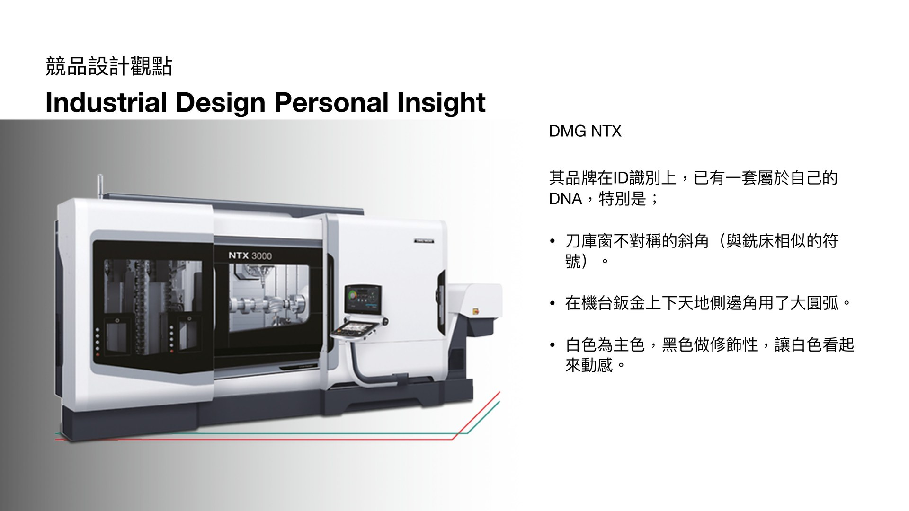
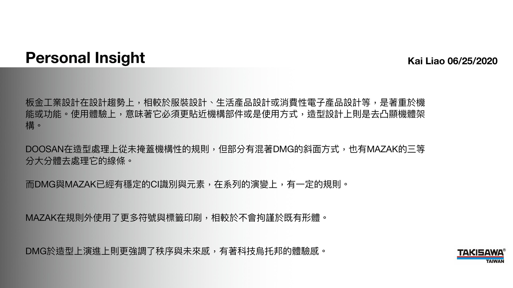
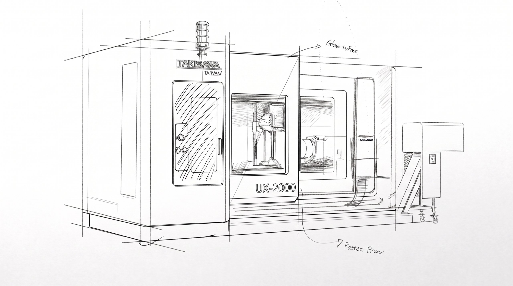
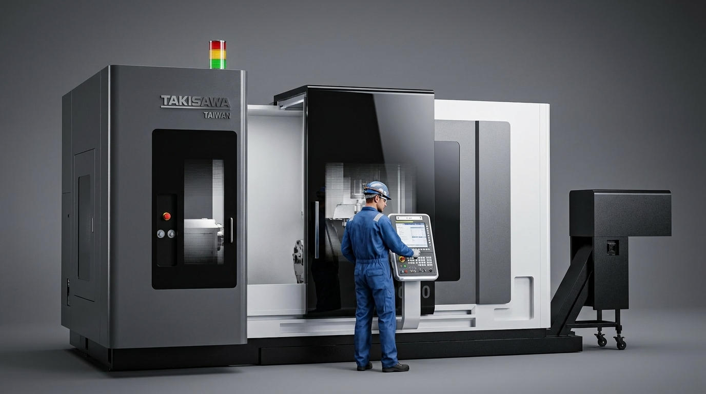
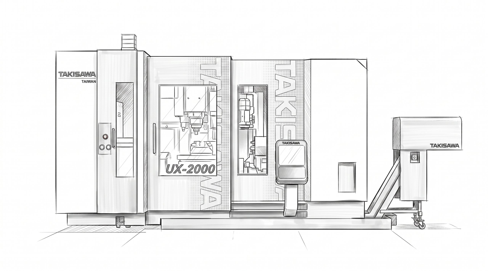
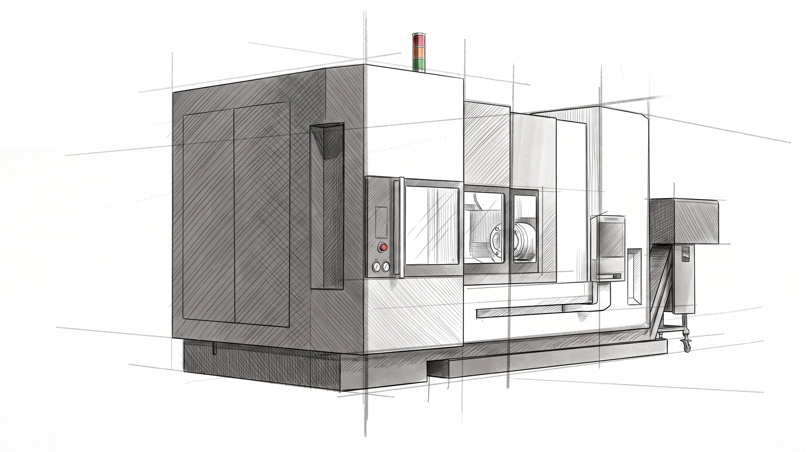
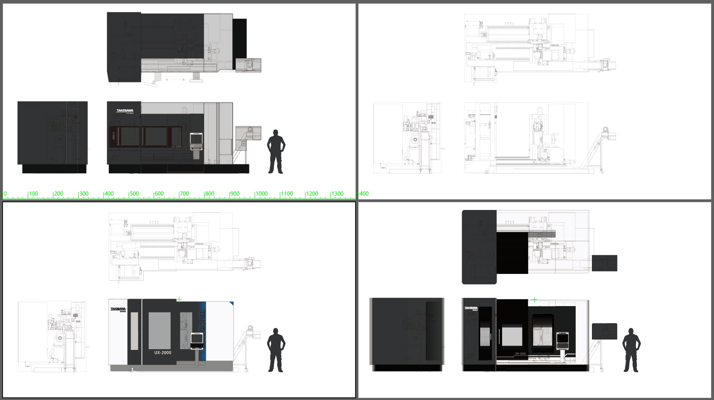
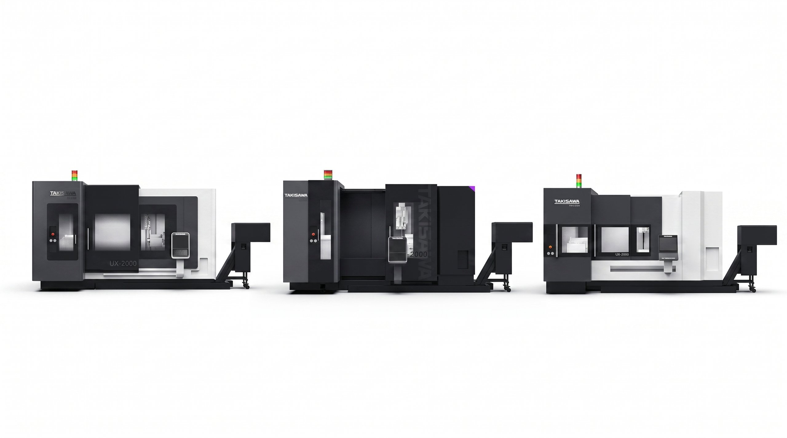
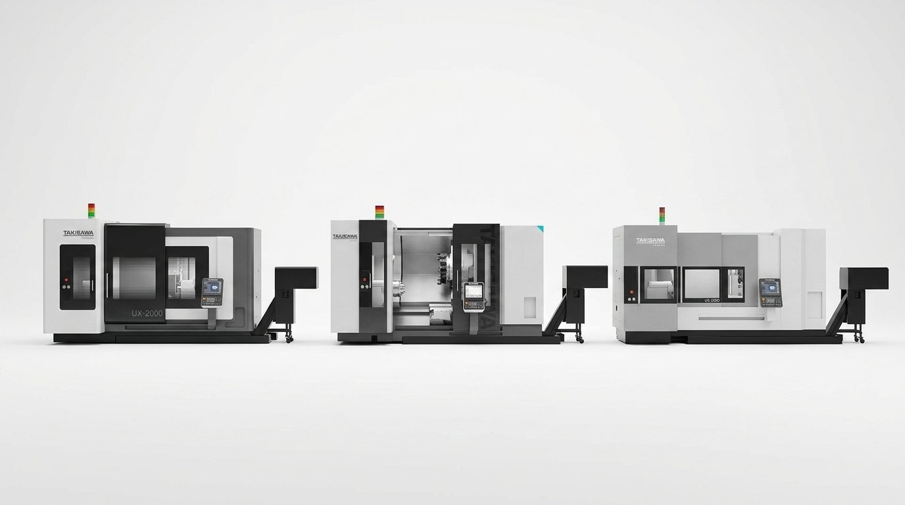
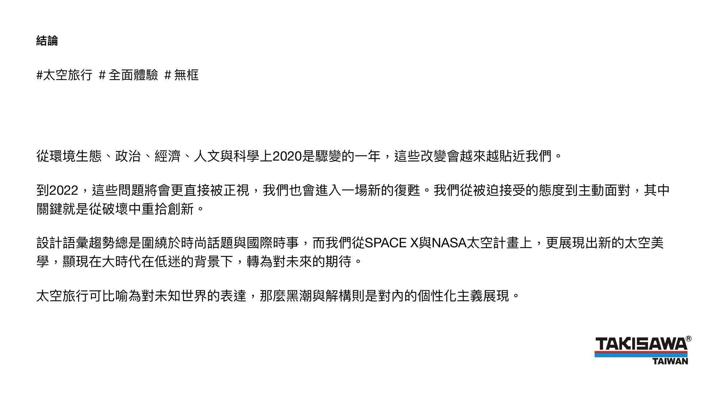

產品類型
五軸加工中心機

設計的起點是深入研究市場上高階工具機品牌的 ID 語彙。透過拆解 DMG、Mazak、DOOSAN 等競品的造型 DNA,才能為 TAKIZAWA 定位出既有辨識度、又符合自身品牌調性的設計方向。

作為機台的實際使用者,我把設計思考建立在對真實工具機的觀察上——相較於服裝設計或消費電子設計,工具機設計必須以功能為優先,再從功能限制中提煉出屬於 TAKIZAWA 的造型語彙。
DOOSAN 在造型處理上以斜切為主;DMG 以斜面連續性與大圓弧見長;Mazak 以大面積標籤與內斂配色識別。綜合這些觀點,TAKIZAWA 的設計應在有序的線條上、有一定的規則,同時傳達科技感與穩定的體驗識別。

第一個提案方向,採用不同的鈑金區域堆疊與包覆邏輯,營造層次感,並導入「太空未來」的意象作為造型主題。

「太空未來」是貫穿 TYPE_A 的核心概念。四面利用直角大面積曲面設計,強調鈑金拼接色隨曲線層疊,呼應太空元素的無框、大量體美學。

第二個提案方向,以解構拼接與黑階配色為主軸,呈現更沉穩、內斂的高階工業感。

第三個提案方向,以斜切造型作為主要語彙,呼應競品研究中歸納出的工具機造型符號,同時建立清晰的視覺重心與方向感。


將 TYPE_A、TYPE_B、TYPE_C 三種方案套上一致的深色系配色,並排比較,驗證造型語彙在同一套 CMF 系統下的一致性與識別度。

同樣的三種方案套上淺色系配色,與深色系對照,完整呈現 CMF 系統的延展性,協助決策者從造型與配色兩個維度綜合評估。

從環境生態、政治、經濟、人文與科學上劇烈變動的 2020 年出發,這份提案嘗試將時代情緒轉化為工具機的造型語言,以「太空旅行、全面體驗、無框」為主題,把黑階與解構拼接融入產品設計,傳達對未來世界的個性化展望。